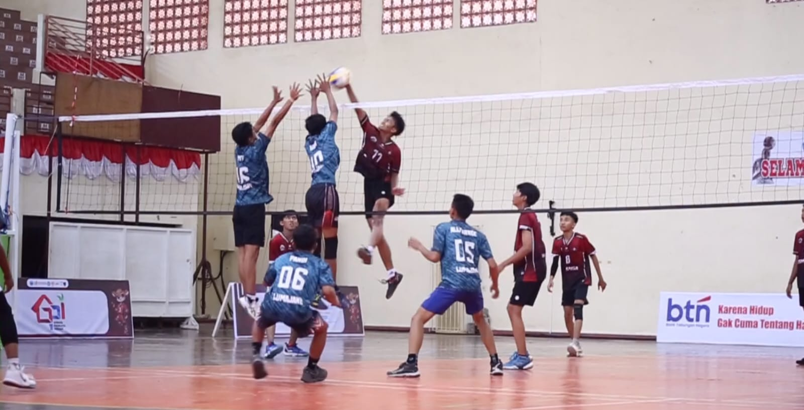

SELAMAT DATANG
UKM-O VOLIJE
Momen latihan dan kebersamaan keluarga UKM-O VOLIJE.


TENTANG ORGANISASI
UKM-O VOLIJE
UKM-O VOLIJE merupakan Unit Kegiatan Mahasiswa Olahraga bidang bola voli di Politeknik Negeri Jember. UKM ini menjadi wadah untuk mengembangkan kemampuan bermain voli, meningkatkan kebugaran fisik, serta membangun kerja sama dan sportivitas.
Melalui latihan rutin, latih tanding, dan turnamen, anggota dapat meningkatkan keterampilan, meraih prestasi, mempererat kebersamaan, dan mengembangkan potensi di bidang olahraga.
VISI DAN MISI
UNIT KEGIATAN MAHASISWA (UKM) OLAHRAGA – VOLIJE
Menjadikan UKM Bola Voli sebagai wadah pengembangan minat dan bakat mahasiswa yang unggul, berprestasi, sportif, serta menjunjung tinggi solidaritas dan kekeluargaan, baik di lingkungan kampus maupun di luar kampus.
-
Mengembangkan Potensi Mahasiswa
Menjadi wadah bagi mahasiswa untuk mengembangkan minat, bakat, dan kemampuan dalam bidang olahraga bola voli.
-
Meningkatkan Prestasi
Meningkatkan kualitas dan kemampuan anggota melalui latihan rutin, pembinaan, serta mengikuti berbagai kompetisi dan turnamen bola voli.
-
Membangun Solidaritas dan Kekeluargaan
Menciptakan lingkungan organisasi yang harmonis, solid, dan penuh rasa kekeluargaan antaranggota tanpa membedakan latar belakang.
-
Menanamkan Nilai Sportivitas dan Disiplin
Membentuk karakter anggota yang disiplin, bertanggung jawab, sportif, serta mampu bekerja sama dalam tim.
-
Memperluas Relasi dan Kerja Sama
Menjalin hubungan baik dengan UKM olahraga dari kampus lain maupun komunitas bola voli untuk memperluas pengalaman dan jaringan.
-
Meningkatkan Eksistensi UKM
Membawa nama baik kampus melalui kegiatan olahraga, pertandingan persahabatan, dan kompetisi bola voli di tingkat lokal maupun nasional.
- Menjadi tempat berkumpulnya mahasiswa yang memiliki minat dan bakat dalam olahraga bola voli.
- Menciptakan atlet mahasiswa yang berkualitas dan berprestasi.
- Membentuk mahasiswa yang sehat secara jasmani dan memiliki mental yang kuat.
- Membangun organisasi yang aktif, inovatif, dan berkelanjutan.
- Menjadikan bola voli sebagai sarana mempererat persaudaraan antarmahasiswa.